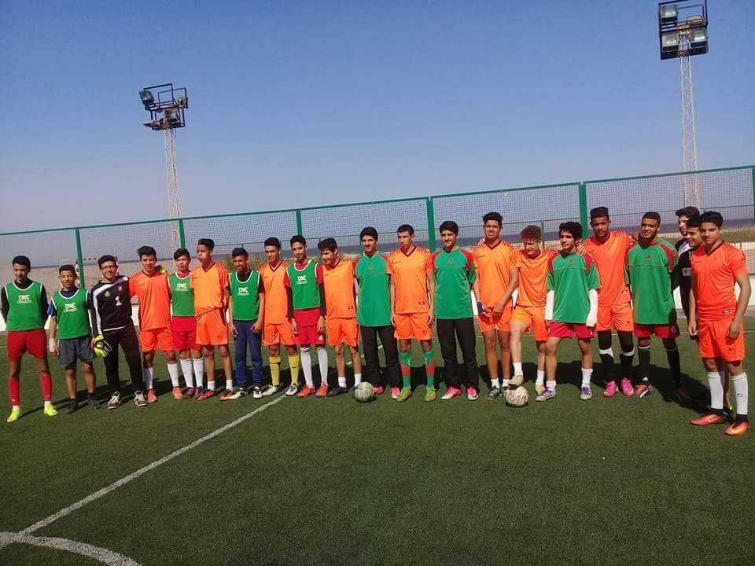
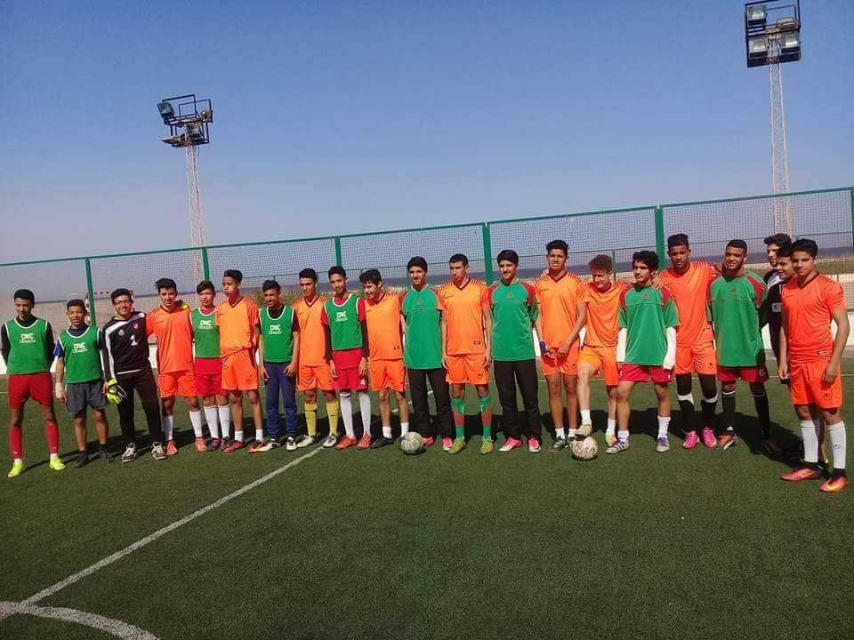

|
Passions |
- Foot-ball
Depuis mon enfance je rêve d'etre un footballeur professionel ...à lage de 12 ans j'ai rejoint le club athletique bizertain la bas j'ai appris les ABC de football et j'ai passé par les cathegories ecole minime cadé et junior ... Pour beaucoup de raions j'ai quité le club à l'age de 16 ans et j'ai rejoint l'astre sportif de menzel jemil pendant 6 mois et j'ai aussi jouer 6 mois pour le stade africain de menzel borguiba ... a l'age de 18 ans j'ai décidé d'arreter de jouer le football dans des clubs pour plusieurs raisons académiques, de santé et familiales....Aussi j'ai participé a des plusieurs evenements et des tournoits de football a l'exemmple des tournoits de ramadan et tournoit du copa coca cola et tournoit aurganisé par des clubs et j'ai eu beaucoup de médailles et des prix que ce soit individuels ou collectifs.
 

Médailles et Prix:
- Musique
- volley-ball
Aussi j'aimae beaucoup le sport du volleyball et jai participé a des tournoits de beach volley ball pendant l'été...
- Pèche et Camping
j'adore aussi le camping et la pèche :
- Stade et Mouvements